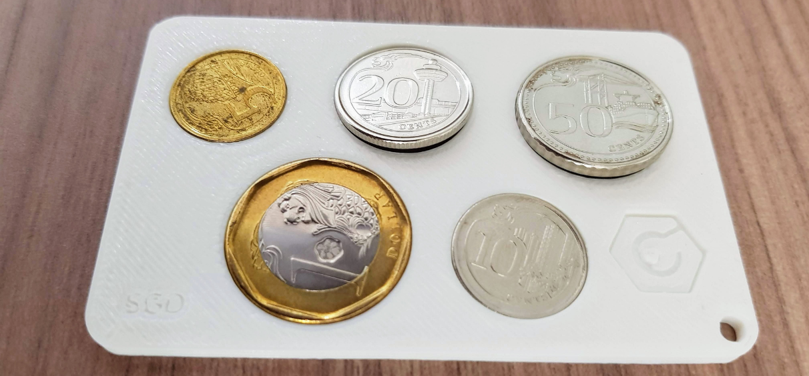
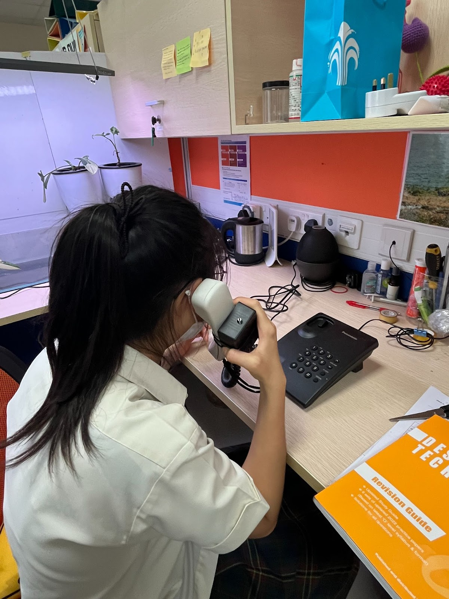
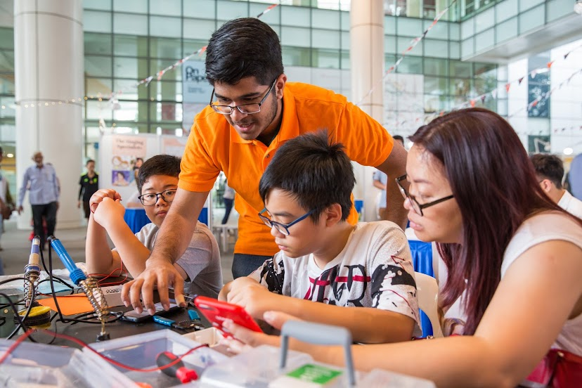
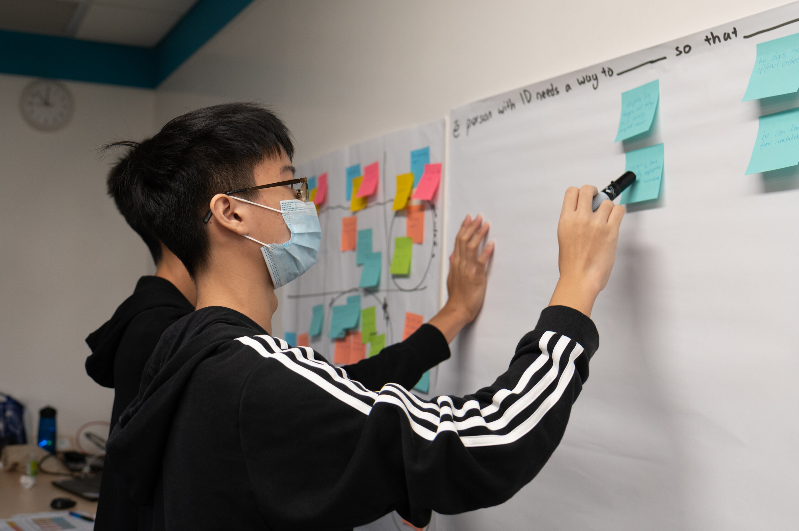

Open Role: Innovators
Who are we looking for?
Tech & engineering enthusiasts aged 18 to 30 who wish to learn about assistive technology, open-source hardware, and accessible participatory design.
Looking to create something cool and improve your skills while making a positive impact? Join us to make technology accessible for persons with disabilities!
Why join T4G?
Develop a range of personal and professional skills through experiential learning.

Discover Accessible & Assistive Technology in Singapore’s disability sector

Design and execute a project through a participatory approach

Connect with like-minded techies who want to use tech for good

Make a real impact by developing solutions for actual users
Your Innovation Journey
In your T4G journey, you will participate in workshops geared towards innovators of different levels, be mentored and advised by pro-techies, and have a chance to build realistic solutions with end users.
| Month | Date | Location | Time | Programme |
|---|---|---|---|---|
| June 2023 | 3 June | TechAble | 10am to 1pm | Introduction to Tech For Good & Assistive Technology |
| 12 – 17 June | Community Partners’ | 3 hours | Learning Journeys: Meet Your Community Partners | |
| July 2023 | 1 July | NLB MakeIT @ Tampines | 10:30am to 5:30pm | Reviewing Project Proposal and Introduction to Making Skills |
| 22 July | NLB MakeIT @ Tampines | 12.30pm to 3.30pm | Making Your First Prototype | |
| August | 5 Aug | NLB MakeIT @ Tampines | 12:30pm to 3:30pm | User Feedback & Consultation |
| 19 Aug | NLB MakeIT @ Punggol | 12:30pm to 3:30pm | Interim Presentation & Peer Review | |
| September | 30 Sep | National Library Plaza @ Bugis | 10am to 5pm | Showcase Festival |
| October | 7 Oct | Location to be advised | 11am to 2pm | Post Festival Peer Review Party |
FAQs
When will I know the results of my application?- All applications should be submitted by 23 April 11:59PM
- Shortlisted applicants will be notified by 25 April. You will be invited to chat with us over coffee/tea in late April to early May 2023. The final selected T4G members will be notified via email by 22 May 2023.
We’re looking for innovators aged between 18 to 30 years old in 2023 and able to commit to Tech For Good for 4 months from June 2023 to September 2023.
During the shortlisting process we would be evaluating applicants based on their:
- Interest in disability inclusion
- Interest in designing for accessibility in technology and/or assistive technology
- Foundation in engineering or technology
Yes, absolutely! We encourage you to continue your journey in accessible technology!
I still have questions!Drop us an email at techforgood@engineeringgood.org